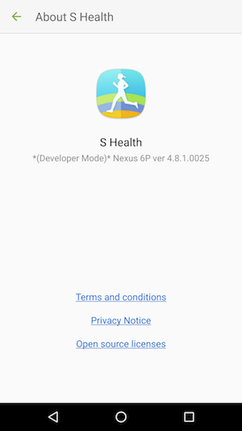

Getting started
$ npm install react-native-validic-aggregator-shealth --save
Mostly automatic installation
$ react-native link react-native-validic-aggregator-shealth
Manual installation
Android
- Open up
android/app/src/main/java/[...]/MainApplication.java
- Add
import com.validic.mobile.rn.shealth.RNValidicMobileAggregatorPackage;to the imports at the top of the file - Add
new RNValidicMobileAggregatorPackage()to the list returned by thegetPackages()method
- Append the following lines to
android/settings.gradle:include ':react-native-validic-aggregator-shealth' project(':react-native-validic-aggregator-shealth').projectDir = new File(rootProject.projectDir, '../node_modules/react-native-validic-aggregator-shealth/android') - Insert the following lines inside the dependencies block in
android/app/build.gradle:compile project(':react-native-validic-aggregator-shealth')
Native SDK installation
Copy validicmobile-shealth.aar from the ValidicMobile Android sdk to the android/app/libs directory of your React native project. Create the 'libs' subdirectory if not present.
Samsung Health
In order to use Samsung Health with ValidicMobile a valid copy of the Samsung Health SDK must be provided by the developer. This can be downloaded from the SHealth developer portal: Samsung SHealth Developer.
Place the samsung-digital-health-***.jar in the same android/app/libs folder next to the validicmobile-shealth.aar described in the Plugin Installation section.
Developer mode
In order to test you must enable developer mode in the S Health app on your phone. As of shealth sdk version 1.2.1, you enable developer mode by going to the More->Settings->About S Health and tapping the version number until "(Developer Mode)" is displayed next to it.

Usage
import ValidicSHealth from 'react-native-validic-aggregator-shealth';
Subscriptions
Configuration
Starting with Android Oreo, background execution limits are imposed on applications in the background and will destroy them after a certain amount of time. To prevent this it is recommended to configure the ValidicSHealth object with a foreground service notification configuration. This will ensure that results are develivered in near real time.
ValidicSHealth.configure({
notification_id: 1,
notification_title: "title",
notification_clear_text: "Stop", // if set will create a button in the notification that will stop observing data until the next time the app is launched
notification_icon: "ic_launcher.png" // will look resource folders for file named ic_launcher.png
});
Available Data Types
Samsung provides several data types that can be subscribed to for notification when data changes.
The available data types are:
- com.samsung.health.blood_glucose
- com.samsung.health.blood_pressure
- com.samsung.health.body_temperature
- com.samsung.health.caffeine_intake
- com.samsung.health.exercise
- com.samsung.health.food_info
- com.samsung.health.food_intake
- com.samsung.health.hba1c
- com.samsung.health.heart_rate
- com.samsung.health.oxygen_saturation
- com.samsung.health.sleep
- com.samsung.health.sleep_stage
- com.samsung.health.uv_exposure
- com.samsung.health.water_intake
- com.samsung.health.weight
- com.samsung.shealth.step_daily_trend
NOTE: Data types that are going to be used in your application must be added to the AndroidManifest.xml.
android/app/AndroidManifest.xml
<application name="testApp">
<meta-data android:name="com.samsung.android.health.platform_type" android:value="rel"/>
<meta-data android:name="com.samsung.android.health.permission.read" android:value="com.samsung.health.blood_glucose;com.samsung.health.exercise"/>
</application>
Subscribing
ValidicSHealth.addSubscriptions(["com.samsung.health.exercise", "com.samsung.health.blood_glucose"]);
NOTE: Calling ValidicSession.endSession() will remove all SHealth subscriptions and stop listening for new data.
Historical Fetch
Validic provides the ability to query 6 months of data for a subset of data types provided by Samsung Health by querying
an array of ValidicSHealth.HistoricalSetType
Currently 2 historical sets are available
- ValidicSHealth.HistoricalSetType.HistoricalSetTypeFitness - Exercise data
- ValidicSHealth.HistoricalSetType.HistoricalSetTypeRoutine - Step data
ValidicSHealth.fetchHistory([ValidicSHealth.HistoricalSetType.HistoricalSetTypeRoutine]); //fetch last 6 months of walking data
This is will trigger the EVENT_ON_HISTORY_FETCH event described in the Events section
Events
To listen for events from SHealth an eventListener should be added to the native event emitter. It is recommended to do this in your comonents componentDidMount method
ValidicSHealth.eventEmitter.addListener(ValidicSHealth.EventNames.EVENT_ON_PERMISSION_CHANGE, (permissions)=>{
// SHealth permissions have changed
console.log(permissions.accepted) // array of accepted permissions from the user
console.log(permissions.denied) // array of permissions denied by the user
});
ValidicSHealth.eventEmitter.addListener(ValidicSHealth.EventNames.EVENT_ON_ERROR, (error)=>{
// An error has occurred with SHealth
console.error(error);
});
ValidicSHealth.eventEmitter.addListener(ValidicSHealth.EventNames.EVENT_ON_RECORDS,(recordSummary)=>{
// Validic has gathered records because of a data type subscription change
console.log(recordSummary) // summary of how many records were collected by the subscriptions keyed by the `ValidicSHealth.SummaryTypes`
});
ValidicSHealth.eventEmitter.addListener(ValidicSHealth.EventNames.EVENT_ON_HISTORY_FETCH, (historySummary)=>{
// Validic data has pulled 6 months of records from SHealth
console.log(historySummary) // summary of how many records were collected by the subscriptions keyed by the `ValidicSHealth.HistoricalSetTypes`
});
Events should be removed when they are no longer necessary or when the component listening will be unmounted
componentWillUnmount(){
ValidicSHealth.eventEmitter.removeAllListeners(ValidicSHealth.EventNames.EVENT_ON_PERMISSION_CHANGE);
ValidicSHealth.eventEmitter.removeAllListeners(ValidicSHealth.EventNames.EVENT_ON_RECORDS);
ValidicSHealth.eventEmitter.removeAllListeners(ValidicSHealth.EventNames.EVENT_ON_HISTORY_FETCH);
ValidicSHealth.eventEmitter.removeAllListeners(ValidicSHealth.EventNames.EVENT_ON_ERROR);
}